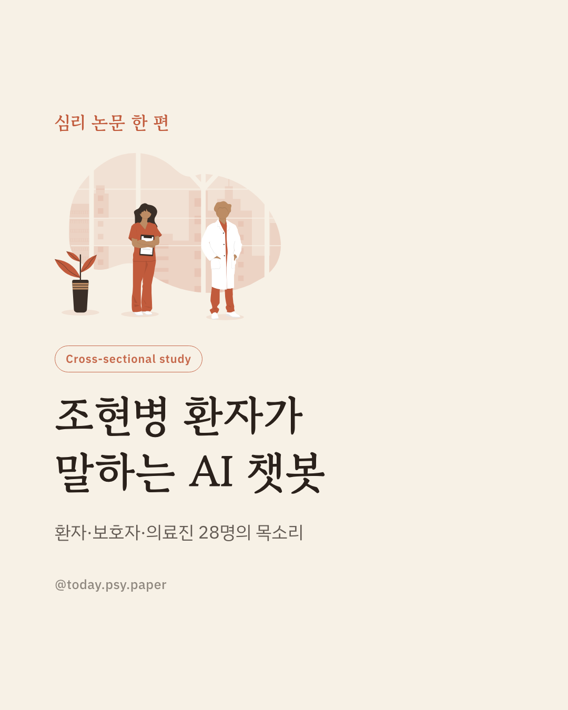

AI 챗봇이 정신건강 돌봄을 넓히는 도구로 주목받고 있습니다. 우울증이나 불안뿐 아니라 조현병 환자에게도 AI가 도움이 될 수 있다는 논의가 나오지만, 정작 조현병 당사자의 생각은 그동안 연구에서 다뤄지지 않았습니다. 이 연구는 뉴욕의 한 대형 병원에서 조현병 스펙트럼 장애를 가진 환자, 보호자, 의료진을 대상으로 포커스 그룹 인터뷰를 진행했습니다. 환자 17명, 보호자 7명, 의료진 4명이 참여해 AI 챗봇에 대한 생각을 나눴습니다. 참가자들은 진료와 진료 사이 곁에 있어줄 존재로서 AI에 기대를 보였지만, 개인정보와 신뢰 문제를 가장 큰 우려로 꼽았습니다. 특히 AI가 치료사를 대체하는 것이 아니라 보조하는 역할에 머물러야 한다는 의견이 두드러졌습니다. 이 연구는 조현병 환자를 위한 AI 도구를 만들 때 투명성과 신뢰, 명확한 사용 범위가 우선돼야 한다는 점을 보여줍니다. 다만 한 병원의 소규모 참가자를 대상으로 한 탐색적 질적 연구인 만큼, 단일 연구이므로 확대 해석은 조심해야 합니다. 출처: Psychological Medicine (2026), 'Stakeholder perspectives on artificial intelligence in schizophrenia care' #임상심리 #조현병 #디지털정신건강 #정신건강정보 #AI챗봇
python3 publish.py 42713807